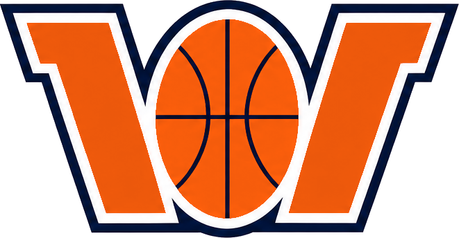

NBA| ☰ | Rank ↕ | Pos ↕ | Player ↕ | Team ↕ | Age ↕ | +/– ↕ | Type ↕ | Priority ↕ | Note | Y!Rank ↕ | Y!Owned ↕ | CBS Owned ↕ | GP ↕ | MIN ↕ | FG% ↕ | FGM ↕ | FGA ↕ | FT% ↕ | FTM ↕ | FTA ↕ | 3PM ↕ | 3PA ↕ | 3P% ↕ | PTS ↕ | REB ↕ | ORB ↕ | DRB ↕ | AST ↕ | STL ↕ | BLK ↕ | TO ↕ | Action |
|---|---|---|---|---|---|---|---|---|---|---|---|---|---|---|---|---|---|---|---|---|---|---|---|---|---|---|---|---|---|---|---|---|
| Your watch list is emptyUse the search bar above to add players | ||||||||||||||||||||||||||||||||
![101]()